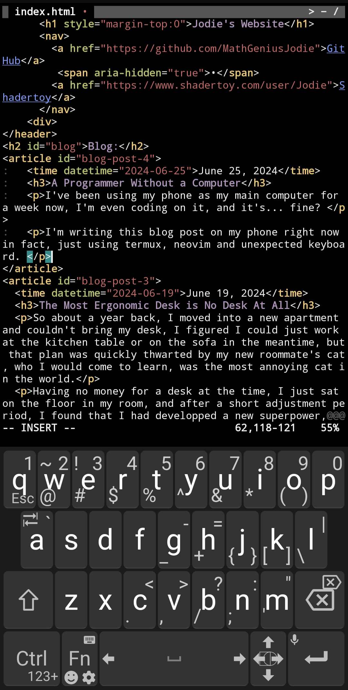

Blog:
Don't Quit Your Vices
Replace unhealthy sugary treats with fancy salads. Replace social media by hanging out with your friends or texting them. Replace gambling with starting a business. Vices usually fill a void, find out a healthy way of filling it.
Modern Color Utility Classes
The arrival of relative colors and the oklch color space to CSS allows for a very clean way of making composable utility classes for colors. With one class for the base color and one for the lightness. You can play around with the code on this codepen.
.swatch{
background: oklch(from var(--base) var(--l) c h );
}
.l-20{--l:0.2}
.l-40{--l:0.4}
.l-60{--l:0.6}
.l-80{--l:0.8}
.l-100{--l:1.0}
.aquamarine{--base: aquamarine}
.crimson {--base: crimson}
.goldenrod {--base: goldenrod}
.indigo {--base: indigo}
Fast Sigmoid (Updated)
https://godbolt.org/z/xbxnE61WT
Still
time moves like honey
sweet and slow
even the wind limps
dragging its hem across the thorns
the clouds weep softly
too heavy for the sky to hold
each moment settles like dust
remembered but never recalled
here, for a moment or an eternity
I can stop doing, and simply be
Stop Having Goals
Humans aren't made to have long-term goals. If you have a goal, don't think about the goal. Stop caring about the goal. Failure to achieve the goal is neutral. Do not let yourself think about it. Not having reached the goal yet should never be on your mind.
Learn to enjoy the process. Want to be strong? Learn to enjoy exercise. Want to lose weight? Learn to enjoy hunger. Want to be rich? Learn to enjoy saving money. Want to make friends? Learn to enjoy being interested in people. Do it without an agenda.
Do the process every day, prioritise it, make it a part of your schedule. Get good at the process.
Do you actually enjoy this or are you addicted?
Things that are pleasurable aren't necessarily addictive, and things that are addictive aren't necessarily pleasurable.
Addiction is a cycle of craving (unpleasant), a short hit of meaningless pleasure (optional), followed by a sense of emptiness (also unpleasant).
Why it Doesn't Feel That Way
Addiction is a trickster. It makes you rationalise your addiction, convincing you that you actually need it and that you truly enjoy it. If you didn’t need it, it would mean you were being unproductive. If you didn’t enjoy it, it would follow that you were hurting yourself. To not rationalise addiction is to feel guilty, helpless, and foolish.
Hidden Addiction
Things you recognise as unpleasant often fly under the radar. They are frequently not identified as addictive. Pleasant things also often don't register as addiction. You just think you're doing them repeatedly because they are fun.
King of the Hill
shimmering dewdrops
jewels in the grass
dawn's vaulted ceiling
adorned with golden clouds
this hill, my ornate throne
where I am king
The Emotional Cyborg
One limitation of therapy is that you can't have a therapist be with you 24/7 to examine your behavior. Luckily we now have ai that can monitor everything you say, and correct bad thought patterns and behaviours in real time.
Just like smartphones turned us into information and math cyborgs with access to services such as google and wolfram alpha, now computers allow us to enhance our emotional intelligence.
Furniture Free
I recently got interviewed by Charlotte Collins of Architectural Digest about furniture-free living, read the article here.
My Meditation Method
No matter how wise I feel, staring at a wall always gives me new insights, and it doesn't take long either, I like to take off my glasses so the wall is blurry, and wearing headphones with white noise too.
I try to think about nothing, but thoughts always come up, and when they do, I write them down in my notebook.
Trying to think about nothing makes you really analyse all your thoughts non-judgementally and forces you to reframe them in a way that they stop bothering you, because if they still bother you. good luck thinking about nothing.
Writing down your thoughts is also important, it frees your mind from having to remember, and you can always come back to them later.
I'm starting to think that the key to creativity and introspection is just being extremely bored and understimulated, ideas always come.
A Programmer Without a Computer
I've been using my phone as my main computer for a week now, I'm even coding on it, and it's... fine?
I'm writing this blog post on my phone right now in fact. Just using termux, neovim and unexpected keyboard.

I might get a foldable phone and/or a physical keyboard in the future, but honestly I'm not in a rush.
The Most Ergonomic Desk is No Desk At All
So about a year back, I moved into a new apartment and couldn't bring my desk, I figured I could just work at the kitchen table or on the sofa in the meantime, but that plan was quickly thwarted by my new roommate's cat, who I would come to learn, was the most annoying cat in the world.
Having no money for a desk at the time, I just sat on the floor in my room, and after a short adjustment period, I found that I had developped a new superpower, I could simply sit on the floor with no back support, and it was fine, in fact it was better than fine, it was better than sitting on a chair.
After a few months of this, I decided to buy a desk, and I found that I couldn't sit at it for more than a few hours without my back hurting, so I went back to sitting on the floor, and later donated the desk.
I haven't bought any furniture since, and I don't plan to, people didn't have furniture for most of human history, and many people in the third world still don't, this isn't as weird as it sounds.
Get Off Your Phone
Do you feel like you don't have any time? Do you feel like you don't have any energy? The culprit might just be that you spend 8 hours or more a day on your phone. Go ahead, check your screen time in your phone settings right now...
A rude awakening
When I first did this, I was shocked, I had absolutely no idea, I would have guessed 2 hours a day maximum if you asked me to estimate, but the software doesn't lie, I was spending 8 hours a day on average on my phone. That's a full-time job!
What you can do
Here's what worked for me and allowed me to cut my screen time down to 1-2 hours a day:
- Share a screenshot of your screen time to a group chat of your friends every day or week, to keep yourself accountable
- Remove anything that you can doomscroll off your homescreen, in fact, consider removing the app entirely.
- Add a screen time widget to your homescreen, this will remind you how much time you've spent on your phone today.
- Apps like Instagram allow you to make widgets to take you directly to messages
- Instead of checking apps constantly for new messages, turn on silent notifications, your phone won't vibrate, but you'll know if there's activity without having to open the app
- Consider making more of your notifications silent
- Don't check your phone in the morning, get up and work or do your morning routine right away
- Embrace boredom, don't reach for your phone when you're bored, think, meditate, smell the flowers, etc.
Should I Buy the Thing? A Flowchart
Am I happy? - Yes: You don't need the thing to be happy, don't buy the thing.
\ No: Will the thing make me happy? - Yes: Buy the thing.
\ No: Don't buy the thing
Bit Arrays for Fast Graph Search
One problem with every implementation of the HNSW paper I've seen is the use of ordered sets to keep track of visited neighbors, this causes a huge performance overhead.
After much experimentation, I've found that using a bit array to keep track of visited neighbors is much faster.
For a code example, see Joann, my HNSW implementation.